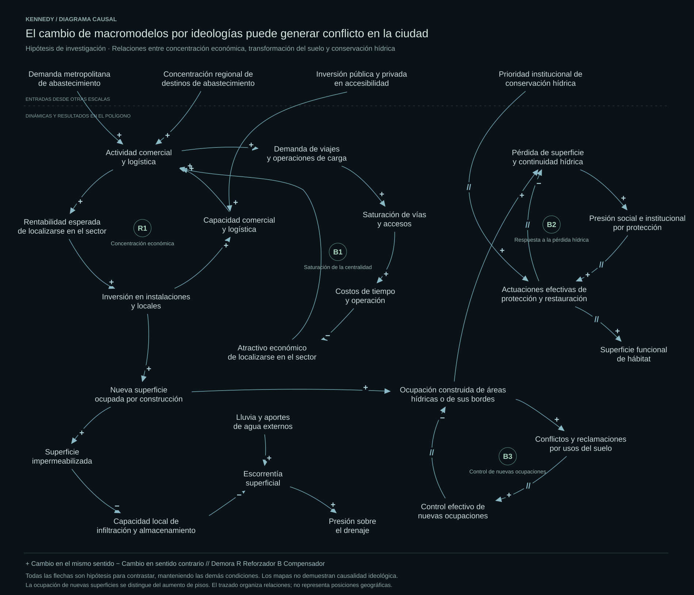

Actividad → rentabilidad esperada → inversión → capacidad → actividad. La actividad puede atraer condiciones que permitan más actividad. Es un circuito reforzador, condicionado por demanda y costos.
EXPLICAR EL PROBLEMA
Diagramas causales
MODELO EXPLICATIVO / HIPÓTESIS PARA CONTRASTAR
¿Qué relaciones pueden transformar este territorio?
El abastecimiento llega desde una escala mayor. La actividad puede atraer inversión y transformar el suelo; las prioridades de conservación actúan sobre ese territorio ya ocupado. Estos diagramas proponen mecanismos para investigar, no demuestran que una ideología haya causado cada cambio.

Amplía con + y desplázate dentro del visor. Consultar versión original de fondo blanco ↗
Cómo leerlo desde cero
Cada nombre es una variable. Cada flecha propone que un cambio en la primera puede modificar la siguiente. + significa mismo sentido; − significa sentido contrario. No significan bueno y malo. // indica una demora. Un bucle es una cadena que regresa al punto de partida.
Actividad → viajes → saturación → costos → menor atractivo → actividad. Los costos pueden frenar la concentración, aunque no garantizan que se traslade.
Pérdida → presión por protección → actuaciones efectivas → menor pérdida. Es compensador. La financiación, la ejecución y la recuperación introducen demoras.
Ocupación → reclamaciones → control efectivo → menor ocupación. Debemos comprobar quién reclama, qué decisiones se toman y si se ejecutan.
Qué cambia en la vista tipo Vensim
El diagrama anterior pregunta qué influye sobre qué. Aquí preguntamos qué se acumula y a qué ritmo cambia. Los rectángulos contienen niveles; las válvulas representan entradas o salidas por unidad de tiempo. Las flechas azules transmiten información, no hectáreas ni vehículos.
Cantidad de operaciones que podrían atenderse por día. Aumenta al incorporar capacidad y disminuye al retirarla; no equivale al número de viajes reales.
C(t + Δt) = C(t) + [I − R] × ΔtC: capacidad; I: incorporación; R: retiro. t es el momento y Δt el intervalo en años. I y R se expresan en operaciones/día por año.
Aumenta al ocupar nuevo suelo y disminuye al liberar superficie construida. Construir pisos adicionales no incrementa automáticamente este nivel.
S(t + Δt) = S(t) + [O − L] × ΔtS: hectáreas construidas; O: nueva ocupación en ha/año; L: liberación en ha/año. Se suma el cambio neto ocurrido durante Δt.
Aumenta con recuperación funcional y disminuye con pérdidas. Agua abierta, vegetación inundable y funcionamiento ecológico no son equivalentes.
H(t + Δt) = H(t) + [Rec − P] × ΔtH: hectáreas funcionales; Rec: recuperación en ha/año; P: pérdida en ha/año. Recuperar requiere comprobar funciones; no basta colorear una superficie verde.
Faltan niveles iniciales, tasas, funciones de respuesta y demoras verificadas. Las tasas deben limitarse por la capacidad o superficie disponible, sin valores negativos ni doble conteo. Estas ecuaciones expresan balances; no son un modelo calibrado ni un archivo ejecutable de Vensim.
Del diagrama al polígono
Entradas: demanda metropolitana, concentración de destinos, inversión y prioridades institucionales. Resultados locales: actividad, saturación, ocupación construida, impermeabilización y condiciones hídricas. La lluvia entra también desde fuera. La serie cartográfica de la pestaña Evidencia e indicadores permite observar cambios de cobertura; los intereses y decisiones requieren evidencia documental adicional.